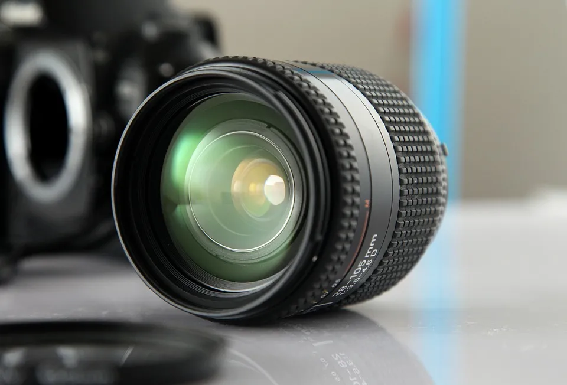
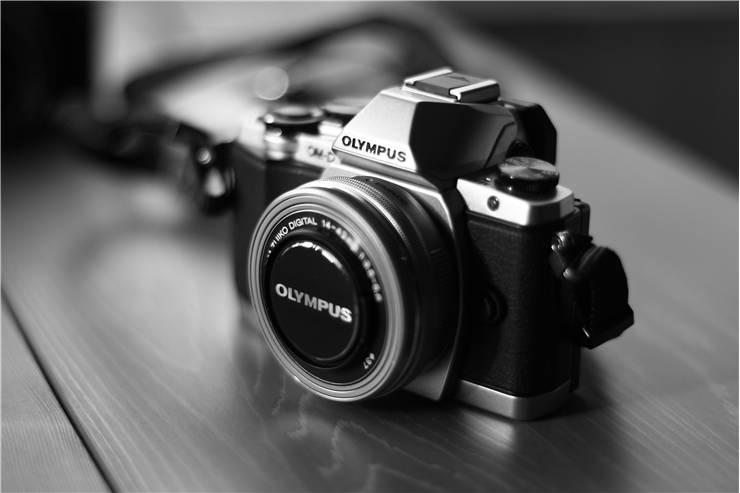

1 / 3

Caption Text
2 / 3

Caption Two
3 / 3

Caption Three
In this article, we will have an in-depth analysis of Digital Photography course offered by ITIs. It is a job oriented vocational trade. This article covers topics such as trade details, duration, syllabus, admission process and career prospects.
ITIs (Industrial Training Institutes) in India are offering some of the best vocational courses out there. Digital Photography trade/course is one such job oriented vocational course. For govt jobs, please check – list of government jobs after passing ITI. Digital Photography ITI course is also sometimes known simply as ITI Photography/Photographer course.
The main aim of this trade is to provide vocational training to candidates and turn them into skilled and qualified photographers! The course thus aims at developing a skilled work-force of qualified photographers in India
Introduction to digital photography
Familiarization of various types of cameras
Setting up ideal lighting conditions
Operating various types of cameras
Editing images using computer applications
Printing photographs
Familiarization with the institute
Handling different types of cameras
Using different types of lights
Indoor and outdoor photography
Practice photography using various lighting techniques
Digital image editing using software
Digital image editing using software
Handling video cameras
Handling HDDs, DVDs and CDs
Using microphones
Use of reflectors, skimmers and various lighting setups
Production planning practical
Shooting and editing of short documentary, interview, music video
Industrial visit
Project Work
ITI Digital Photography course passed candidates have diverse job opportunities available in front of them. Self employment is a great opportunity available in front of them.
Some of the well known private sector recruiters are –
photography studios
Newspapers
Magzines
Publishing firms
Libraries
Event management companies
Art galleries
Hospitals
Advertisement agencies
MNCs
Film and TV production houses
Photographer
Fashion Photographer
Assistant Photographer
Sports Photographer
Photojournalist
Forensic Journalist
Corporate Photographer
Videographer
Photo Editor
Printing Specialist
Starting own photo studio
Starting own photography equipment shop
Becoming freelance photographer (weddings, events, for magazines etc)